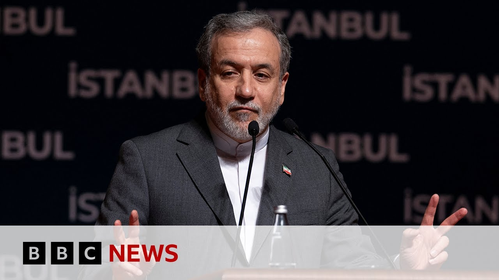

【BBC News 20250628 伊朗外长承认美国空袭对核设施造成严重破坏】
Summary: The US defense secretary described recent strikes on Iran's nuclear facilities as highly complex and secretive, while Iran's foreign minister confirmed serious damage but denied plans for US-Iran talks. BBC correspondent Lee Ducet reports from Tehran under strict conditions, detailing defiance from Iran's leadership, civilian casualties, and uncertainty over the nuclear program's future.
摘要： 美国国防部长称近期对伊朗核设施的打击是高度复杂且隐秘的，伊朗外长承认严重破坏但否认美伊会谈计划。BBC记者李·杜塞在严格条件下从德黑兰发回报道，描述了伊朗领导层的反抗态度、平民伤亡及核计划前景的不确定性。

⏱️ Estimated Reading Time: 9 min
📚 六级生词 📚 雅思生词 📚 托福生词 📚 专八生词 📚 SAT生词 📚 考研生词 📚 GRE生词 📚 高考生词
The US defense secretary has called the recent strikes on Iran's nuclear facilities the most complex and secretive in military history.
美国国防部长称近期对伊朗核设施的打击是军事史上最复杂且隐秘的行动。
But he gave few new details about their impact.
但他未透露有关打击效果的新细节。
The Iranian foreign minister Abbas Arachi has now acknowledged what he called serious damage from the strikes, saying an assessment was underway.
伊朗外长阿巴斯·阿拉基承认空袭造成他所谓的“严重破坏”，并表示评估正在进行。
But he disputed President Trump's assertion that there would be US Iranian talks next week, saying no such plan had been set.
但他反驳特朗普总统关于下周美伊将举行会谈的说法，称尚未有此计划。
Our chief international correspondent, Lee Ducet, is in the Iranian capital, Tehran.
本台首席国际记者李·杜塞目前在伊朗首都德黑兰。
She's being allowed to report from there on condition that none of her coverage is used on the BBC's Persian service, which broadcasts to the people of Iran.
她获准在当地报道的条件是其内容不得用于BBC波斯语频道（该频道向伊朗民众播送）。
This law from the authorities applies to all international media agencies operating in Iran.
伊朗当局的这一规定适用于所有在伊国际媒体机构。
This is the report Lee said earlier.
以下是李早些时候的报道。
Iran's state TV, the studio where the Supreme Leader speeches are aired, but not today.
伊朗国家电视台，平日播放最高领袖讲话的演播室，今日却未启用。
Not after Israel attacked it, forcing the news reader to flee, her desk devoured by fire.
此前以色列袭击导致新闻主播逃离，她的工作台被火焰吞噬。
Today, a fiery message of his own from the Ayatollah said to have sheltered in a bunker during the war.
今日，据传战时躲藏于地堡的伊朗最高领袖哈梅内伊发表了激烈宣言。
Iran with this iron national resolve rejects surrender.
伊朗以钢铁般的民族决心拒绝投降。
For a country like this, the idea of surrender is laughable to anyone who truly knows the Iranian nation.
对这样的国家而言，投降的念头在真正了解伊朗民族的人眼中荒谬可笑。
For now, a fragile ceasefire.
目前，脆弱的停火持续。
Thran starts to look like itself.
德黑兰逐渐恢复往日面貌。
Its infamous traffic, its beautiful bazaars.
著名的拥堵交通，美丽的市集。
Residents slowly returning to a city they left to escape the bombs.
居民们正缓慢回到他们为躲避轰炸而逃离的城市。
But for some it's still a battle just to breathe.
但对一些人而言，呼吸仍是场战斗。
In this ward there are civilians not soldiers.
这间病房里是平民而非士兵。
Morteza shows his his scars.
莫塔扎展示着他的伤疤。
He was working in the transport department when the entrance to the notorious Evan prison was bombed.
臭名昭著的埃文监狱入口遇袭时，他正在交通部门工作。
Israel lies saying they are only hitting military and nuclear sites.
以色列谎称只打击军事和核设施。
They hit a prison.
他们炸了监狱。
I was there.
我当时在场。
I was hurt and I'm amazed countries like England, France, the US, and the UN don't condemn Israel.
我受伤了，且震惊于英、法、美等国及联合国未谴责以色列。
The abandoned American embassy, a monument to Iran's troubled relationship with the West, accused of sponsoring terrorism, of trying to develop a nuclear bomb.
被遗弃的美国大使馆，象征着伊朗与西方紧张关系，伊朗被指控支持恐怖主义及试图研发核弹。
Charges Thrron denies.
德黑兰否认这些指控。
But even inside this former embassy, a cafe serving iced americanos.
但在这座前使馆内，竟有一家售卖冰美式的咖啡馆。
[Music]
[音乐]
Amir tells me he wants to see a better relationship between America and Iran.
阿米尔告诉我，他希望看到美伊关系改善。
So many Iranians do.
许多伊朗人亦如此期盼。
But in this dark time, there's still not much light.
但在这黑暗时期，光明依旧稀缺。
The message in public was defiant.
公开表态仍显强硬。
But this blackened studio symbolizes this dark moment in Iran.
而这焦黑的演播室象征着伊朗的至暗时刻。
The most difficult and dangerous decisions confronting the supreme leader.
最高领袖正面临最艰难危险的决定。
The most fateful choices in his nearly 40 years in power.
这是他近40年执政中最关键的抉择。
A new uncertain chapter in an old long-standing war.
一场古老持久战争的新不确定篇章。
Lee Juset, BBC News, Tan.
BBC新闻，李·朱塞特，德黑兰报道。
Well, Le joined us live from Tehran a short while ago, and she told us it's still unclear just how much damage was done to Iran's nuclear facilities.
稍早前李在德黑兰连线时表示，伊朗核设施受损程度尚不明确。
Well, Well, as we've been reporting on the news, there's been so many different assessments coming from different capitals.
正如我们新闻报道所述，各方对损害评估众说纷纭。
The United States continues to use the exact description starting with President Trump who in the immediate aftermath of those unprecedented strikes on Iran's three main facilities talked about how uh they had the American bombs had obliterated uh Iran's nuclear program.
美国沿用特朗普总统最初的描述——他在空袭伊朗三大核设施后立即宣称美军炸弹已“摧毁”伊朗核计划。
Then you had the intelligence assessment saying it was more limited that it had only been set back a few months.
随后情报评估称破坏有限，仅使伊朗核计划倒退数月。
And then yesterday uh the supreme leader of Iran Ayatah Kame made his first speech since President Trump announced a ceasefire accused the United States of exaggerating uh the extent of the damage.
而昨日伊朗最高领袖哈梅内伊在特朗普宣布停火后首次讲话，指控美国夸大破坏程度。
Perhaps the the clearest assessment came from the foreign minister of Iran Abbasaki who did say there had been serious damage.
最明确的评估或许来自伊朗外长阿拉基，他确实承认遭受“严重破坏”。
But the big question everyone is asking is just how far does that damage go?
但核心问题是：破坏究竟有多严重？
When the question the rest of the world is asking is how in what way and how soon can Iran resume the nuclear enrichment?
国际社会更关注伊朗将以何种方式、多快重启核浓缩活动？
That was Lee Ducet speaking to us a little bit earlier.
以上是李·杜塞稍早前的报道。
Well, let's speak to our correspondent Dan Johnson who's in Jerusalem.
现在连线我们在耶路撒冷的记者丹·约翰逊。
Dan, we heard a defiant tone from Iran Supreme Leader around what 18 hours ago, but today hearing from the foreign minister that serious damage was caused.
丹，18小时前伊朗最高领袖态度强硬，但今日外长却承认严重破坏。
How close will we ever get to knowing the truth of how much Iran's nuclear program has been set back?
我们能否获知伊朗核计划受挫的真相？
It's really difficult to see if we'll ever get firm evidence or clear answers on that.
很难判断是否能获得确凿证据或明确答案。
Iran is at the moment subject to monitoring and inspections by the International Atomic Energy Agency, but they've been moved since this conflict in the Iranian parliament uh for Iran to uh to drop out of ae monitoring.
伊朗目前接受国际原子能机构监督，但冲突后伊朗议会已推动退出IAEA监督机制。
So, uh, in terms of how that's going to be observed in the future, how Israel, the Americans, and the rest of the world is going to reassure itself that Iran isn't rebuilding its nuclear program, that is something that'll have to be negotiated and agreed.
因此未来如何监督、以色列美国及国际社会如何确信伊朗未重建核计划，需通过谈判达成协议。
And at the moment, the Iranians are saying they won't participate in those talks and still until they themselves have a full assessment of exactly what the level of damage is.
而目前伊朗表示拒绝参与谈判，直至其完成损害评估。
So, in the meantime, you've got this war of words and this fight to control the narrative over exactly what has happened here.
因此现阶段存在舆论战，各方争夺事件解释权。
And it it may not in reality actually matter what happened on the ground.
地面实际情况或许已无关紧要。
Uh the Israeli leadership is trying to tell its people that this conflict was justified and worthwhile, that the US strikes were necessary and that they have achieved their aim.
以色列领导层试图向民众证明冲突正当必要，美方打击达成目标。
The Iranians are trying to tell their own people that their nation isn't weakened and that they could rebuild their nuclear program if indeed they choose to.
伊朗则向民众强调国家未衰弱，且有能力重建核计划（若其选择）。
Although they maintain that is not in pursuit of nuclear weapons.
尽管伊朗坚称非为发展核武器。
It's just for nuclear power.
仅为核能用途。
The rhetoric's completely swapped over.
双方说辞彻底反转。
If we go back two weeks to the start of this conflict, when the Israelis were saying that the Iranians posed an existential threat, the Iranians were saying, "Nothing to worry about. We're of no threat. There's nothing to be concerned about here."
回溯两周前冲突伊始，以色列称伊朗构成生存威胁，而伊朗声称“无需担忧，我们毫无威胁”。
Now, you've got the Americans and the Israelis saying that the threat has been neutralized, but the Iranians maintain they could potentially rebuild their nuclear program.
如今美以宣称威胁已消除，伊朗却坚持其可重建核计划。
Dan, thank you.
丹，谢谢。
That's Dan, thank you.
以上是丹的报道，谢谢。
That's our correspondent Dan Johnson in Jerusalem for
这是我台驻耶路撒冷记者丹·约翰逊的报道。